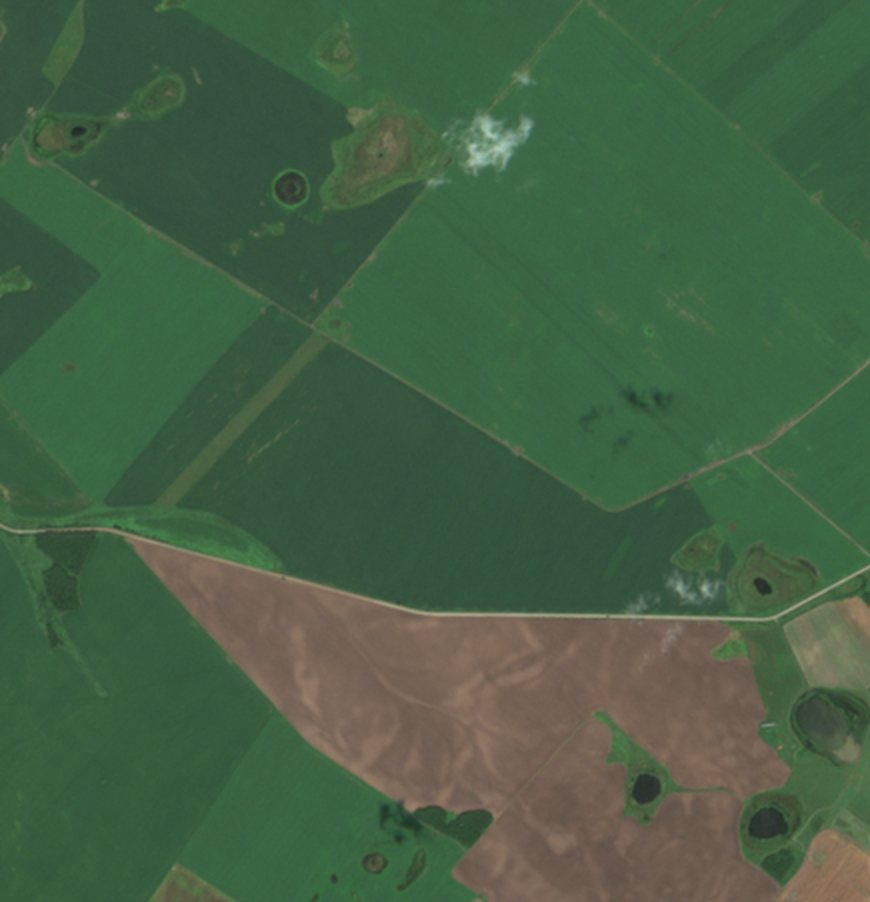
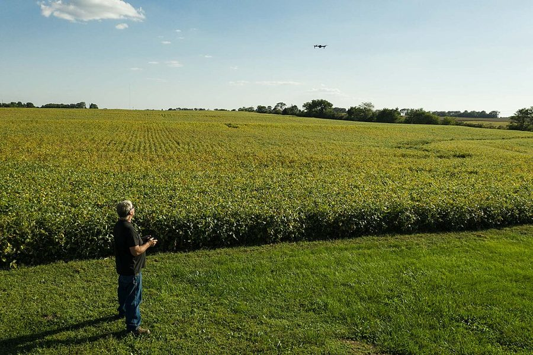
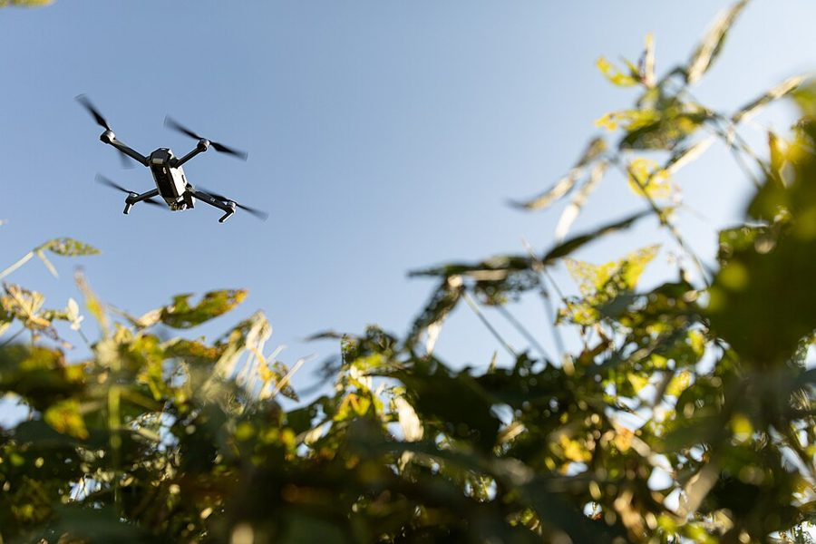
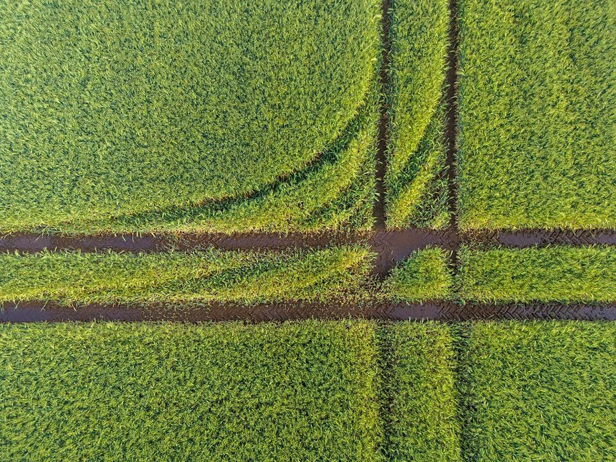
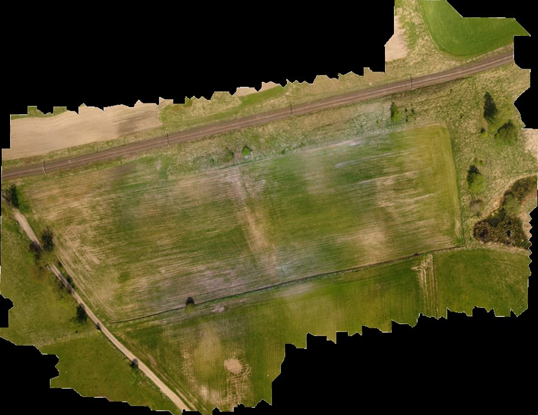

Часть 1 · Спутник
Живой пример: поля за сезон по датам
Настоящие снимки Sentinel-2, апрель–октябрь 2026. Поля в Тамбовском районе Амурской области — одном из главных соевых регионов. Участок около 4 × 4 км.

07.08.2026 Copernicus Sentinel-2Видно весь сезон: пашня весной, всходы в июне, максимум в августе, созревание и уборка к октябрю. Нижнее поле убрано уже в начале августа. Так же будет выглядеть лента по вашим полям — только с контурами, номерами полей и вашими отметками.
Как часто приходят снимки
Посчитали по этому участку за сезон, с 1 апреля по 16 октября 2026.
дат съёмки — новый снимок в среднем раз в 2,2 дня. Сейчас летают три спутника Sentinel-2.
из них почти без облаков (меньше 20%) — примерно раз в неделю. Остальные частично облачные.
все эти снимки бесплатные. Облачные система отбрасывает сама.
Хватит ли взять снимки один-два раза? Нет — смысл в регулярности: весь сезон приходят новые снимки, и видно, как меняется каждое поле. Но это не ручная работа: один раз настраиваем — дальше сервер сам каждый день проверяет, есть ли новый снимок над вашими полями, и обновляет страницу.
Что считается автоматически
Из тех же бесплатных снимков — без участия человека.
График поля за сезон
Индекс вегетации одного поля (верхнее справа на снимке) по всем ясным датам: 31 точек. По форме кривой похоже на сою: всходы в июне, максимум в июле–августе, созревание с середины сентября. Культуру на месте мы не проверяли.


- Контуры ваших полейзаводим один раз — из кадастра или рисуем по снимку
- Каждый день сервер спрашивает API: «есть новый снимок над этими полями?»скрипт по расписанию, без участия человека
- Берёт только кусок над полями и проверяет облакаоблачные снимки отбрасывает, целые сцены по сотне километров не скачивает
- Считает индекс, зоны и среднее по каждому полюкак на картинках выше
- Кладёт в базу с датойистория копится весь сезон и из года в год
- Страница и уведомленияползунок по датам, график поля, сообщение в Telegram, если поле резко «просело»
Какие API, как часто и сколько стоит
Для одного хозяйства платные тарифы не нужны. Пример выше сделан через первый вариант.
| API | Что даёт | Как часто | Бесплатно | Платно | Нам нужно? |
|---|---|---|---|---|---|
| Earth Searchоткрытые данные на AWS | Sentinel-2, Landsat, Sentinel-1 | каждые 2–3 дня | всё, без регистрации | нет тарифов | основной |
| Copernicus Data SpaceSentinel Hub, openEO | Те же снимки и готовые индексы по контуру поля | каждые 2–3 дня | месячная квота | коммерческие тарифы Sentinel Hub | запасной |
| Microsoft Planetary Computer | Тот же каталог открытых данных | каждые 2–3 дня | да | нет | запасной |
| АгромониторингOpenWeather | Контур поля → готовый NDVI, снимки и погода | как приходят снимки | до 1000 га | £20/мес — 4000 га, £200/мес — 20 000 га | если не писать обработку самим |
| Open-Meteo | Погода и история осадков по координатам поля | каждый час | некоммерческое | недорогой коммерческий тариф | да |
| Google Earth Engine | Мощная обработка архивов | — | только некоммерческое | коммерческое — платно | нет |
| Planet | Снимки ~3 м | ежедневно | нет | дорого | не на старте |
Ограничение спутника: 10 м на пиксель. Слабую зону на поле он покажет, но отдельный очаг сорняков в пару метров — нет. Для этого нужен дрон — о нём дальше.
Если покупать: цены платных API и снимков
На случай, если бесплатного станет мало или нужен будет снимок детальнее. Цены — с сайтов поставщиков и агрегаторов на октябрь 2026, могут меняться.
| Сервис | Что покупаем | Цена | Когда имеет смысл |
|---|---|---|---|
| АгромониторингOpenWeather | Готовый NDVI, снимки и погода по контурам полей | до 1000 га — бесплатно; Starter — £20/мес до 4000 га; Small Kit — £200/мес до 20 000 га | Если не хотим держать свою обработку снимков |
| Open-Meteo | Погода, прогноз и история по полям | Standard — $29/мес (1 млн запросов); Professional — $99/мес (5 млн запросов + история и климат) | Коммерческий сервис для нескольких хозяйств |
| Sentinel Hubтеперь Planet Insights Platform | Обработка Sentinel и других снимков на их серверах | Старые тарифы: Basic ~$1100/год (70 тыс. единиц обработки в месяц), Enterprise Small ~$5500/год. Сейчас Planet переходит на «кредиты мониторинга», точные цены по запросу | Сотни хозяйств; нам не нужно |
| EOSDA | Crop Monitoring и Agriculture API: 15+ индексов, влажность почвы, погода | Crop Monitoring ~$20–300+/мес (оценка агрегатора), API — по запросу; пробное поле до 300 га | Готовая платформа целиком; работа в России под вопросом |
| PlanetScopePlanet | Снимки ~3 м ежедневно | Пакет Agriculture Premium для площадей до 300 км², минимум 5 км² (500 га); цена по запросу | Если нужно чаще и детальнее Sentinel-2 |
| SkySatчерез SkyWatch | Разовый снимок ~0,5 м под заказ | $10–12 за км², минимум 25 км² — от ~$250–300 за снимок | Разовые события: ущерб от града, спор о площади |
| Роскосмосчерез интеграторов, напр. «Совзонд» | Российские снимки 1–2 м под задачу | от ~5 000 ₽ за проект | Если нужна российская съёмка |
| Google Earth Engine | Обработка любых архивов на серверах Google | Коммерческое: абонплата + ~$0,40 за час вычислений | Большие исследования; нам не нужно |
Спутник бесплатно через Earth Search, погода — бесплатно или Standard Open-Meteo, если сервис коммерческий.
Агромониторинг Starter: до 4000 га с готовым NDVI.
Хранение и обработка. Мощный сервер для склейки съёмки с дрона арендуем по часам — только на время обработки.
Для технарей: как выглядит запрос, которым сделан пример выше
POST https://earth-search.aws.element84.com/v1/search
{
"collections": ["sentinel-2-l2a"],
"bbox": [127.94, 50.06, 128.00, 50.10],
"datetime": "2026-04-01T00:00:00Z/2026-10-17T00:00:00Z",
"query": { "eo:cloud_cover": { "lt": 40 } }
}
В ответе — список снимков со ссылками на каналы (красный, ближний инфракрасный, маска облаков). Скрипт читает из каждого файла только кусок над полями, считает NDVI = (NIR − Red) / (NIR + Red) и сохраняет картинку и среднее по полю. Ключ и регистрация не нужны.
Часть 2 · Дрон
Кто что делает
Четыре роли — и у каждой понятная задача.


Получает задание с контуром поля, запускает полёт, загружает фото в систему.
Сам собирает из фото карту поля, индексы и рельеф. Человек не нужен.
Нейросеть ищет сорняки и пропуски, аналитик проверяет и пишет вывод.
Смотрите ленту поля в телефоне, едете на точку, записываете, что сделали.
Как дрон летит «по заданию» и почему не будет бардака
- Из нашей системы выгружаем контур поляфайл с границами (KML) — тот же контур, что на карте
- Дронщик загружает его в приложение дронанапример, DJI Pilot 2 для профессиональных DJI или аналогичные программы
- Программа сама строит маршрут «змейкой»задаём высоту и перекрытие снимков 70–80% — от этого зависит детализация
- Дрон взлетает и летит самснимает по сетке, возвращается на смену батареи и продолжает с того же места
- Загрузка: поле + датафото загружаются в систему через страницу; в каждом снимке уже записаны координаты и время
Порядок держит система, а не человек. По координатам в снимках видно, над каким полем они сделаны, а дата берётся из самих снимков. Дронщику не нужно ничего подписывать вручную — облёт сам ляжет в ленту нужного поля.
Что делают с фотографиями: не скриншоты, а карта
Сотни отдельных фото склеиваются в ортофотоплан — одну точную картинку поля с координатами.


| Программа склейки | Что получаем | Цена |
|---|---|---|
| WebODMоткрытый код, на нашем сервере | Ортофотоплан, индексы (с мультиспектральной камерой), рельеф, 3D | бесплатно |
| Agisoft Metashape | То же, точнее и быстрее на больших объёмах | ~$3499 навсегда (Professional) |
| DJI Terra, PIX4Dfields | Быстрая агро-склейка, индексы, зоны | лицензия, ~$2000 в год у PIX4Dfields |
Склейка поля занимает от десятков минут до нескольких часов на сервере — в зависимости от числа фото.
А можно без склейки — нейросетью по кадрам и сразу на спутник?
Можно. Есть два способа, и лучше всего работает их сочетание.
Фото склеиваются в ортофотоплан, нейросеть смотрит на готовую карту поля кусками.
- Точная геометрия: площади очагов до квадратного метра
- Единая карта — шторка «было → стало» с прошлым облётом
- Ложится на спутник и кадастр сама — у неё есть координаты
- Нужно перекрытие кадров 70–80% — больше фото и полётного времени
- Склейка — часы на сервере
Нейросеть находит сорняк на отдельном фото. По координатам дрона, высоте и углу камеры вычисляем, где это на земле, и ставим метку на карту поверх спутника.
- Быстро — метки можно получить в день вылета
- Меньше фото, подходит обычная камера
- Погрешность — обычно несколько метров, если у дрона нет RTK
- Площади примерные, один очаг на соседних кадрах нужно не посчитать дважды
- Нет единой картинки поля для сравнения
Как сделаем мы: в день вылета — быстрые метки по кадрам, чтобы вы сразу видели, куда ехать. Потом полная склейка — для точных площадей, архива и сравнения с прошлым облётом.
Насколько точно ляжет на спутник
| Вариант | Точность привязки | Что это значит |
|---|---|---|
| Обычный GPS дрона | обычно 1–3 м | Для меток «очаг здесь» и сравнения со спутником (пиксель 10 м) достаточно |
| Привязка по опорным точкам | десятки сантиметров | Совмещаем по углам поля, дорогам или прошлому облёту — делается при обработке |
| Дрон с RTK | несколько сантиметров | Облёты разных дат совпадают сами, шторка «было → стало» точна до растения |
Кто анализирует и какая нейросеть
Разные задачи — разные инструменты. Честно о каждом.
| Задача | Чем делается | Кто |
|---|---|---|
| Склеить фото в карту | Фотограмметрия в WebODM или Metashape — точная геометрия, а не нейросеть | автоматически |
| Индексы и зоны | Формулы по каналам камеры, как в примере со спутником выше | автоматически |
| Найти сорняки, пропуски, посчитать растения | Нейросеть компьютерного зрения (семейства YOLO, U-Net), обученная на размеченных примерах сорняков и сои | нейросеть, дообучаем мы |
| Разметить примеры для обучения | Бесплатные программы разметки CVAT или Label Studio; модель Segment Anything обводит объект по клику | наш аналитик |
| Проверить и написать вывод | Карта, площади очагов, сравнение с прошлым облётом | наш аналитик или агроном |
| Решить, что делать на поле | Лента поля, точки на карте, журнал | вы |
Это инструмент для программистов. Им мы быстро строим и поддерживаем саму систему: загрузку, обработку, базу, страницы. Сам снимки он не анализирует.
Claude и подобные модели могут по готовым цифрам написать понятный отчёт по полю. Мерить площади и считать сорняки должна специализированная нейросеть.
«АссистАгро» от Геомира распознаёт около 150 видов сорняков, в том числе в сое; за рубежом — Agremo. Можно сравнить их результат с нашим.
Первый сезон: нейросеть нужно подстроить под ваши поля — разметить несколько сотен примеров и проверить спорные места на земле. Дальше распознавание работает заметно точнее, а аналитик тратит на поле минуты, а не часы.
Где всё это лежит
Revit — программа для зданий. Для полей есть свой класс программ — ГИС, геоинформационные системы. Всё ниже — бесплатный открытый код.
Итого — так это и делается: фото с дрона → склейка в карту → нейросеть и аналитик → слой с датой в базе → вы открываете поле и ползунком листаете даты. Спутник ложится в ту же ленту сам, каждые несколько дней.
Ещё по теме
Предложение и аналитическая справка — на соседних страницах.
Предложение: что можем сделать дроном и в телефоне → Аналитическая справка: программы, рынок, бесплатные данные →